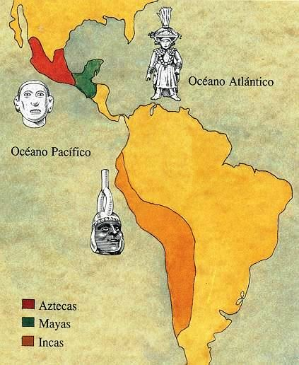
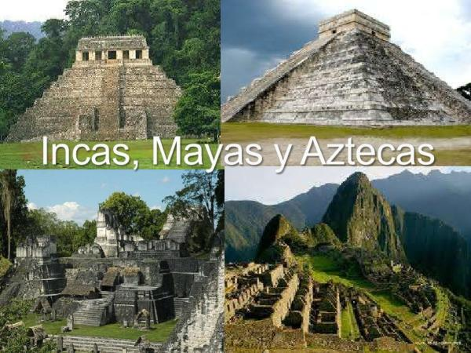

Antes de la llegada de los españoles, América tuvo grandes civilizaciones, que se desarrollaron en distintos momentos y regiones; las ahora más conocidas fueron la de los mayas en la península de Yucatán (México), Gutemala, Belice y el oeste de Honduras y El Salvador; la de los aztecas en el centro de México y la de los incas a lo largo de la cordillera de los Andes, entre lo que hoy es Ecuador y el norte de Chile. Las tres se caracterizaron por sus ciudades e imponentes edificios.
 | Organización Política: | Cada ciudad tenía sus propias autoridades políticas y religiosas y sólo mantenía vínculos comerciales y culturales con otras. El poder político y el religioso se hallaban asociados de manera inseparable |
|---|---|
| Cultivaban: | Maíz, calabazas, ajíes, frijoles, tomate, mandioca, batata, cacao |
| Conocimientos en: |
|
Hacia 1500 antes de Cristo pobblaban la costa pacífica de America Central, y entre 300 y 900 d.C alzaron grandes ciudades como Tikal y Palenque en la selva guatemalteca. Luego las abandonaron y se instalaron en otras de Yucután (Méximo) como Chichén Itzá y Mayapán
| Organización Política: | Especie de monarca elegido por un consejo |
|---|---|
| Cultivaban: | Maíz, poroto, calabaza, tomate, ají, vainilla, cacao | Conocimientos en: |
|
En 1325, tras años de buscar dónde instalarse, los aztecas fundaron un poblado en la isla de un lago en el valle de México. Para defenderlo, se hicieron temibles guerreros.
| Organización Política | Soberano absoluto cuyo mandato se transmitía por herencia |
|---|---|
| Cultivaban: | Papa, maís, quinoa, tomate, calabaza, col, variedaades de ajíes |
| Conocimientos en: |
|
En el siglo XII, en Cuzco, centro de Perú, el pequeño reino inca venció a unos poderosos vecinos. Pachacuti, el victorioso monarca, continuó las conquistas, que siguieron sus sucesores hasta formar un imperio de diez millones de personas y 4500 km a lo largo del Pacífico y la cordillera de los Andes.
Los indígenas, aborígenes u originarios de Argentina son el conjunto de comunidades, familias e individuos que se autorreconocen o reconocieron descendientes de los nativos americanos que habitaban en los límites del actual territorio argentino al momento del primer contacto de los europeos con el territorio en el siglo XVI.
Se consideran mapuches 113.680 personas y son el más numeroso de los 31 pueblos originarios que habitan en el territorio argentino. La mayoría de las comunidades vive en las provincias de Chubut, Neuquén, Río Negro, Santa Cruz y Tierra del Fuego.
FuenteSe autorreconocen 21.807 personas como guaraníes y habitan en el noreste de Argentina en las actuales provincias de Corrientes, Misiones, Entre Ríos y parte de las provincias de Chaco y Formosa.
FuenteEl pueblo Wichí o Wichi en su lengua significa “humanos” y se consideraron wichís 36.260 personas. En la actualidad, las comunidades wichí están localizadas en las provincias argentinas de Chaco, Salta y Formosa.
FuenteLa población kolla en Argentina es de 70.505 personas, y sus comunidades se encuentran ubicados principalmente en las provincias de Jujuy, y el oeste de Salta.
FuenteEn las sierras cordobesas habitaban diversos grupos indígenas horticultores que fueron denominados por los conquistadores como comechingones; este rótulo se consolidó rápidamente como el etnónimo identitario de los indígenas originarios de Córdoba.
FuenteEran un pueblo nómade que basaba su economía en la caza y en la recolección de productos de la tierra, principalmente el guanaco, por la carne y el cuero que les servía para vestirse y para construir los toldos en los que vivían. se ubicaban en Patagonia, entre el río Negro y el Estrecho de Magallanes.
Fuente